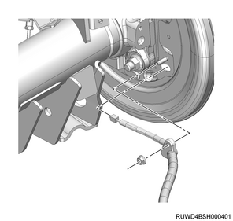
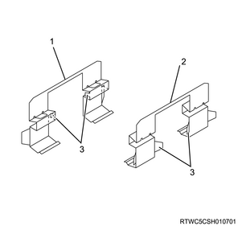
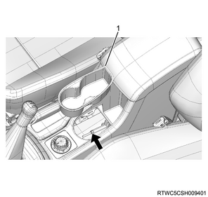

Rear differential assembly installation (All models)
1. Rear differential assembly installation
1. Install the rear differential assembly to the rear axle case.
Note
- Clean the aligning surfaces of the axle case and the differential carrier, and then apply ThreeBond 1215 or equivalent as shown in the diagram.

- 3 mm {0.12 in}
Note
- Install the final drive assembly to the axle case, and tighten the bolts and the nuts to the specified torque.

Tightening torque： 64 N・m { 6.5 kgf・m / 47 lb・ft } Bolt
Tightening torque： 44 N・m { 4.5 kgf・m / 32 lb・ft } Nut
2. Rear axle shaft installation
1. Install the rear axle shaft to the axle case.
Note
- Clean the aligning surface of the axle case and bearing holder.
- Apply liquid gasket, ThreeBond TB1215 or equivalent to the installation surface of the axle case.
Caution
- Insert the axle shaft into the axle case so as not to damage the oil seal.
- If the bearing holder installation bolt has been removed from the brake assembly, be sure to use a new bolt.
Note
- Install the bearing holder fixing nut, and then tighten at the specified torque.
Tightening torque： 122 N・m { 12.4 kgf・m / 90 lb・ft }
3. Parking brake cable installation
1. Install the parking brake cable to the back plate.
Note
- Place the inner cable into the hole of the back plate, install the outer cable case and cap to the backplate, and then tighten the nuts.
Tightening torque： 10 N・m { 1.0 kgf・m / 89 lb・in }

Note
- Install the parking brake cable to the lower link.
Tightening torque： 10 N・m { 1.0 kgf・m / 89 lb・in } Nut
2. Install the parking brake cable bracket to the frame.
Tightening torque： 6.5 N・m { 0.7 kgf・m / 58 lb・in } Bolt
4. Brake shoe assembly installation
1. Install the shoe holding cup to the brake shoe pin.
2. Install the shoe holding spring to the brake shoe pin.
3. Install the brake shoe assembly to the support plate.
Note
- Apply SOLVEST 113 grease to the brake shoe fittings and sliding section of the back plate.

- Back plate sliding section
- Fitting section
Note
- Secure the brake shoe with the shoe holder pin.
- Shoe holding spring
- Shoe holding cup
- Brake shoe pin
Caution
- Securely assemble the shoe holding spring and shoe holder pin.
- Install with the shoe holder pin groove facing sideways.
- Use a new shoe holder pin and spring.
- Be careful not to damage the dust cover
4. Install the adjuster to the brake shoe.
Caution
- Pay attention to the mounting direction of the adjuster.
5. Install the strut to the brake shoe.
6. Connect the parking brake cable to the lever.
7. Install the adjuster spring to the brake shoe.
8. Install the return spring to the brake shoe.
5. Brake support installation
1. Install the brake support to the rear axle.
Note
- Install the brake caliper and brake support as a set to the rear axle.
Caution
- Do not depress the brake pedal before installing the brake caliper and brake support.
Tightening torque： 120 N・m { 12.2 kgf・m / 89 lb・ft }
6. Disc brake pad installation
1. Install the clip to the brake support.
Caution
- Do not mix up the upper and lower sides of the clip.

- Lower side clip
- Upper side clip
- Clamp
2. Install the disc brake pad to the brake support.
Note
- Install the pad assembly attached with the shim to the brake support.
- Align the inner pad indicator with the lower side.

- Seven layered shim
- Outer pad
- Inner pad
- Indicator
Note
- Lower the brake caliper to the original position.
Caution
- Do not damage the brake hose by twisting or pulling it.
- Confirm that the dust boot does not protrude from the piston end, and then lower the caliper.
- Take care to prevent the dust boot from becoming caught between the piston and pad.
3. Install the lock bolt to the brake caliper assembly.
Tightening torque： 32 to 42 N・m { 3.3 to 4.3 kgf・m / 24 to 31 lb・ft }
7. Rear rotor installation
1. Install the rear rotor to the axle shaft.
8. Rear wheel speed sensor preparation
Note
- Check the wheel speed sensor before installation.
- Before installing the sensor, clean the inside of the sensor installation hole and installation surface of the sensor bracket, and the installation surface of the sensor bracket for the knuckle and confirm that there is no foreign material such as rust and pieces of the sensor.
- Remove any foreign material such as pieces of the sensor from the inside of the mounting hole or the installation surface.
- Remove any rust on it with wire brush or the like.
Caution
- When rust penetrant is used to remove the wheel speed sensor, clean up the part with part cleaner or the like.
9. Rear wheel speed sensor safety information
Caution
- When installing the sensor, use your hand to push the sensor installation flange until it is firmly attached to the installation surface, and then tighten the bolt.
- When inserting the sensor, do not pry or strike it with a tool.
- Do not tighten the fixing bolts for the sensor body with an air tool, but temporarily tighten by hand and then fully tighten them.
- After tightening the bolts, confirm that there is no gap between the installation flange and the installation surface again.
- Install the sensor harness using the twist prevention line as a reference to avoid twisting.
- Be careful not to pull the harness forcibly, which may result in disconnection.
- Confirm that there is no harness interference.
10. Rear wheel speed sensor installation
1. Install the wheel speed sensor to the rear axle case.
Tightening torque： 8 N・m { 0.8 kgf・m / 71 lb・in }

2. Connect the harness clip to the harness.
Note
- Install the harness fixing bolt, and tighten it to the specified torque.
Tightening torque： 8 N・m { 0.8 kgf・m / 71 lb・in }
11. Rear wheel speed sensor connect
1. Connect the harness connector to the wheel speed sensor.
12. Rear propeller shaft assembly safety information
Caution
- Pay attention to prevent damage to the oil seal contact surface of the slip yoke during installation.
- Completely remove dust and foreign objects on the flange coupling mounting surfaces of the propeller shaft and final drive.

13. Rear propeller shaft assembly installation
1. Install the rear propeller shaft assembly to the transmission.
2. Install the rear propeller shaft assembly to the flange.
Note
- Align the alignment marks of each joint made during removal, and then tighten the bolt to the specified torque.
Tightening torque： 59 N・m { 6.0 kgf・m / 44 lb・ft }
14. Center bearing assembly installation
Note
- The following is the 2WD model.
1. Install the center bearing assembly to the frame.
Note
- Install the center bearing and tighten the bolt to the specified torque.
Tightening torque： 69 N・m { 7.0 kgf・m / 51 lb・ft }
15. Rear axle differential oil filling
1. Replenish the rear axle case with the rear axle differential oil.
Note
- Install a new gasket to the drain plug and install to the axle case.
Tightening torque： 78 N・m { 8.0 kgf・m / 58 lb・ft }
Note
- Pour in the specified amount of differential oil GL5.
Capacity： 2.2 L { 0.58 US gal / 0.48 Imp.gal } Ring gear size 220mm {8.66in}
Note
- Install a new gasket to the filler plug and install to the axle case.
Tightening torque： 78 N・m { 8.0 kgf・m / 58 lb・ft }
Note
- The following applies to limited slip differential models.
- Pour in the specified amount of differential oil GL5LSD.
Capacity： 2.2 L { 0.58 US gal / 0.48 Imp.gal }
16. Disc wheel installation
1. Install the disc wheel to vehicle.
Note
- Install the wheel nuts in the numbered order.
Tightening torque: 120 N⋅m {12.0 kgf⋅m/87 lb⋅ft}

17. Parking brake lever assembly adjustment
1. Adjust the parking brake.
Note
- Remove the adjust cover, and turn the adjuster until the rear disc rotor no longer rotates.
- Turn the parking brake drum so it faces downward.
- Turn back the adjuster by the specified number of notches.
- Number of notches to turn back the adjuster: 8 notches
2. Adjust the parking brake lever.
Note
- Turn to adjust the adjust nut so that the parking brake lever is pulled up 6 to 9 notches when the lever is pulled up with a force of 294 N {30 kg/66 lb}.
Caution
- Take care not to allow brake drag.

- Adjust bolt
- Adjust nut
- Spacer
- Parking brake cable
Note
- Remove the ashtray and adjust.

- Ashtray
18. Rear wheel speed sensor inspection
Note
- Check the following after installation of the wheel speed sensor.
- Turn the ignition switch ON, and confirm that the ABS warning light turns off after it illuminates for approximately 3 seconds.
- Start the engine and drive the vehicle straight forward from the stopped state. Slowly accelerate to 15 km/h (9 mph) and then slowly apply the brake until the vehicle stops. Confirm that no abnormal noise or problem in braking force during this procedure.
- Confirm whether the following symptom occurs during verification actions above.
- The ABS warning light turns on, or does not turn off.
- ABS operation noise or motor rotation noise is caused.
- Brake pedal kickbacks are felt.
- The target braking force is not produced.
- When the above symptom occurs, take the following action.
- Check the installation status of the wheel speed sensor and connection status of the connector.
- Check the DTCs, and perform inspection and take remedies for the ABS system in accordance with the diagnostic procedure for each DTC.
Caution
- Since the ABS rotates the motor for a moment right immediately after the vehicle is started, sound of rotating motor may be heard.
- This is the operation for initial check task and not at fault.